| 日付 | 2013年9月14日（土） |
|---|---|
| 山域 | 大菩薩 |
| メンバー | 家族（妻、長女・2歳、長男・0歳） |
| 山行形態 | 子連れ日帰り |
| アクセス | 車 |
| ルート (Map) | 竜門峡入口 (9:51) - (10:59) 分岐点 (11:44) - (12:14) 天目 - 竜門峡入口 |
先週の子供2人連れ登山に成功したため、今週も山に行こうということになった。
しかし、今日もさほど好天予報ではないため、渓谷沿いの遊歩道を歩いてみることにする。
娘はもうキャリアに乗せないつもりでいたのだが、前回の那須岳で苦労したため、
泣く泣くキャリアを再登板させることにする。
竜門峡の駐車場に到着。標高800m。
マイナーな渓谷だと思っていたが、トイレ付の立派な駐車場だ。
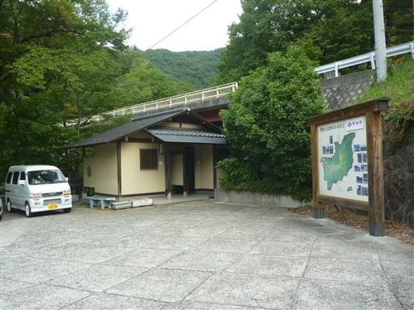
橋を渡って対岸に渡る。工事車両がよく通る道で、トラックが通ると橋はかなり揺れる。
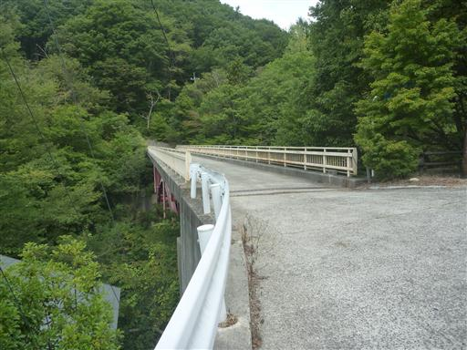
遊歩道入口に到着。木の杖が用意されている。
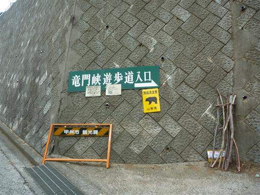
道は舗装されている。

川ははるか下を流れていて、あまり渓谷沿いの道という感じがしない。
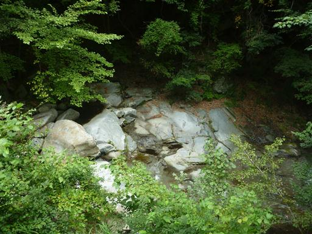
東電の管理小屋に到着。小さなダムらしきものがある。
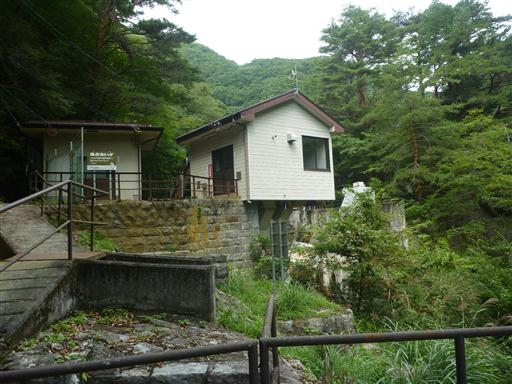
ここから先は舗装路がなくなり少し山道っぽくなる。
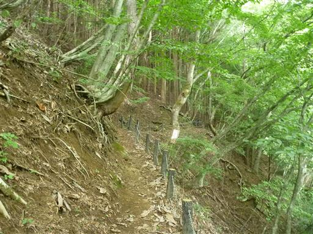
足元にキノコが生えている。この辺りは質・量ともにキノコが豊富だ。
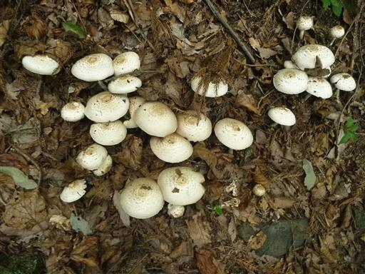
一際目を引く大きな木。石ごと転げ落ちそうだ。
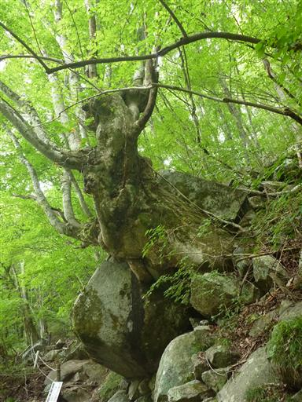
遊歩道はようやく渓谷のすぐそばまで下りてくる。小休止して水の流れを眺める。
娘をキャリアから降ろし、ここから歩いてもらうことにする。
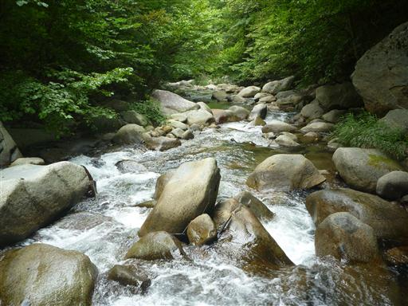
炭焼窯跡。こんな渓谷の真中で誰が利用していたのだろうか？
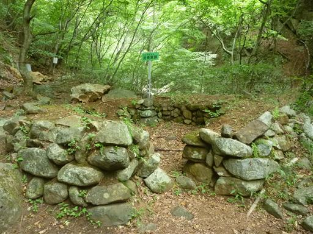
設置された階段を登る。渓谷に沿って少しずつ高度を上げていく。
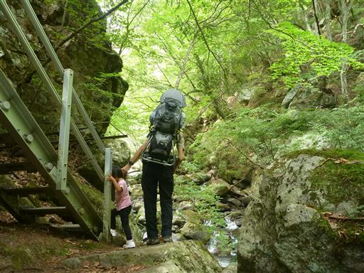
辺りはいつの間にか竹林になる。川沿いの道で竹林というのはあまり見ない。
竹炭用に誰かが植えたのだろうか？
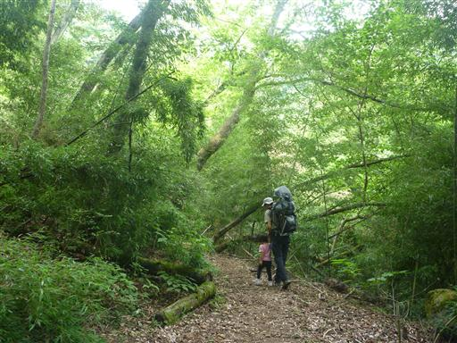
娘はキノコが気に入ったようで、いろいろなキノコを探しながら歩いている。
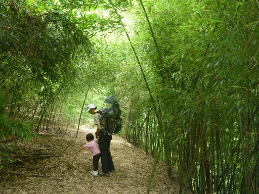
少し古ぼけた橋に到着。
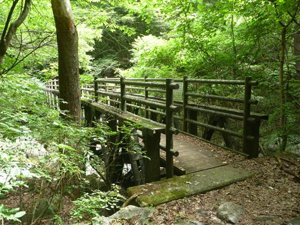
橋を渡った先の河原で昼食休憩をとることにする。
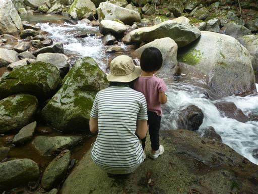
昼食をとったら出発。娘はもう歩きたくないようで、仕方なくキャリアに乗せる。
側には大きな石が積み重なっている。まるで石垣のようだ。
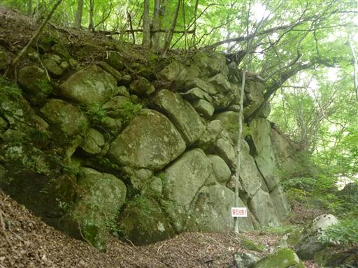
石でできたトンネルを潜る。こういった道はキャリアがあると窮屈で通りにくい。
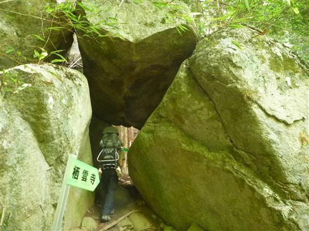
石割けやき。木の力で見事に石がパックリ割れている。
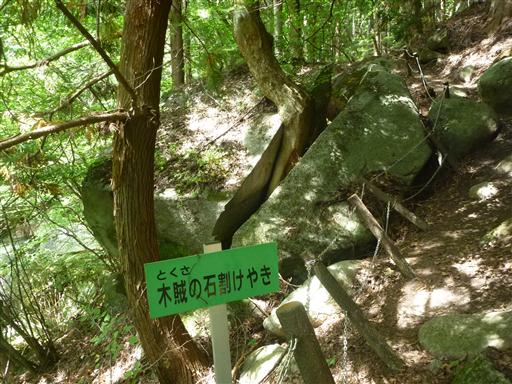
しばらく歩くと道は渓谷を離れて急な上り坂に転じる。荷物が重いのでなかなか辛い登りだ。
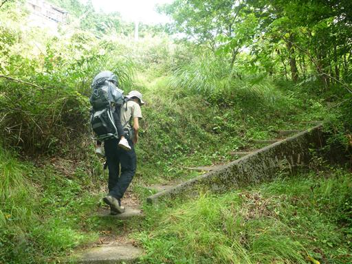
渓谷上部の車道に到着する。標高1030m。
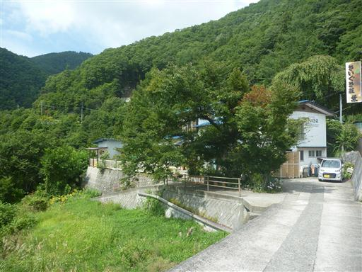
なかなか眺めの良い場所で、遠くの山が見渡せる。今日は思ったよりも天気が良い。
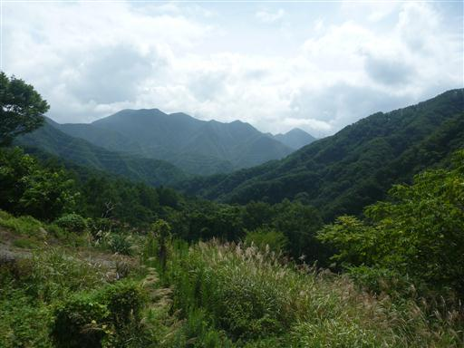
ここから車道を歩いて下って行く。
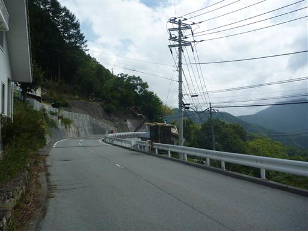
壁一面、見事なツタだ。
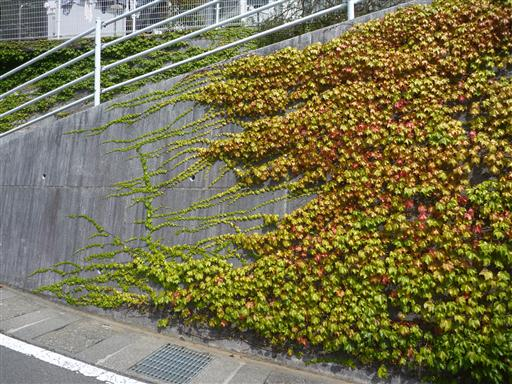
このまま車道を下っても駐車場に戻れるが、それではつまらないので
途中の分岐点から再び渓谷沿いの道に戻ることにする。
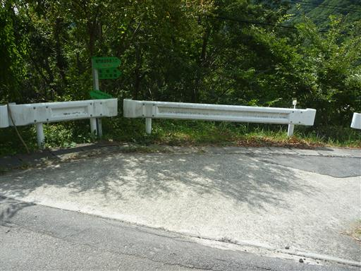
しかしこの道の選択は大失敗。ずっと急傾斜の舗装路で、かなり足が疲れてしまった。
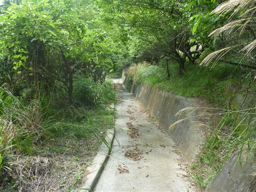
渓谷沿いの道まで下りてきたら、ここからは元来た道を戻って駐車場に向かう。
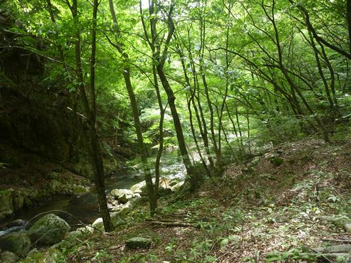
車で帰る途中、まだ時間が早いため猿橋の観光をすることにする。

猿橋から下の渓谷を望む。ものすごい高度感だ。
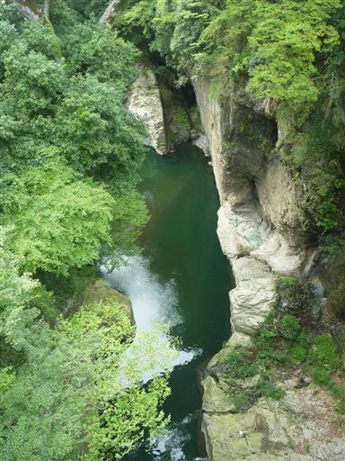
岩を伝って滝が流れ落ちている。

この橋が有名なのは、橋の構造とデザインが珍しいからだ。
刎橋という形の橋で、橋を支える木に屋根があるのは雨で木が腐らないようにするためらしい。
日本三奇橋に選ばれている。
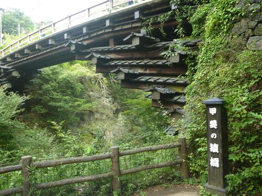
猿橋は甲州街道に架かる重要な橋だったが、今では隣に新猿橋が架けられている。
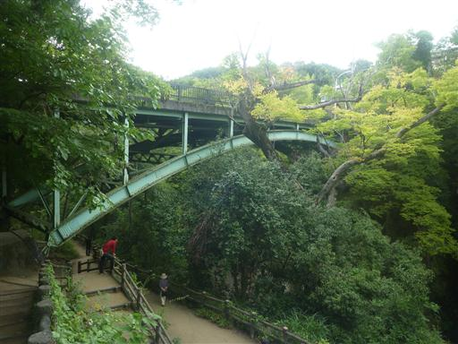
新猿橋から望む猿橋。深い渓谷にうまく架けたものだ。
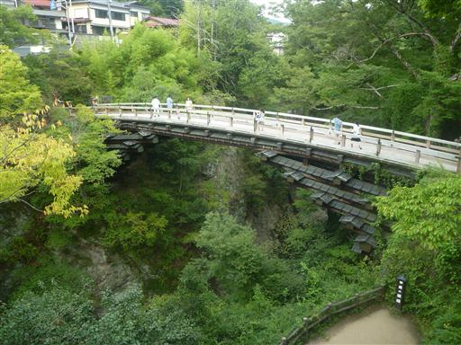
少し遊歩道を歩いて川岸まで下りてくる。緑の水と白い石が美しい。
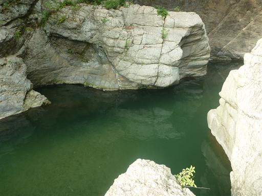
猿橋のすぐ上流は広い河原になっている。
こちらの方が橋を架けるのが簡単なように見えるのだが、違うのだろうか…
30分ほど橋を見学したら、中央道が混雑する前に帰ることにする。
2つの美しい渓谷を眺められた週末だった。
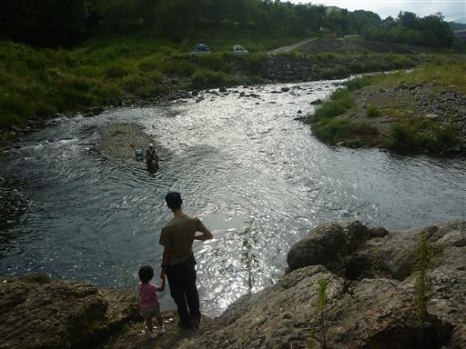